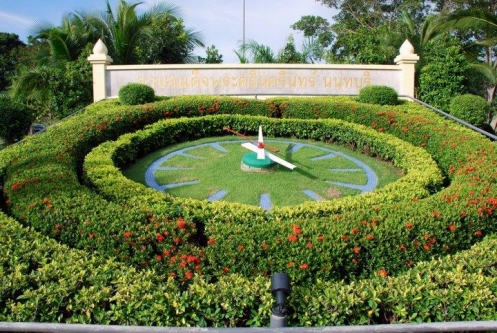

สวนสมเด็จพระศรีนครินทร์ นนทบุรี คือ สวนสาธารณะเฉลิมพระเกียรติสมเด็จพระศรีนครินทราบรมราชชนนี 80 พรรษา ลำดับที่ 11 ตั้งอยู่ที่หนองปรือ ตำบลบ้านใหม่ อำเภอปากเกร็ด จังหวัดนนทบุรี นับเป็นสวนสมเด็จพระศรีนครินทร์ที่อยู่ใกล้กรุงเทพมหานครมากที่สุด มีเนื้อที่ 109 ไร่ เป็นพื้นดิน 40 ไร่ พื้นน้ำ 69 ไร่ สมเด็จสมเด็จพระเจ้าพี่นางเธอ เจ้าฟ้ากัลยาณิวัฒนา กรมหลวงนราธิวาสราชนครินทร์ เสด็จมาทรงเป็นประธานเปิดสวนเมื่อวันที่ 16 มีนาคม พ.ศ. 2536
